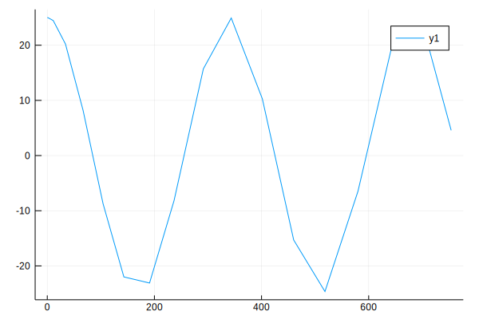

FluModel
using Pkg
Pkg.activate(".")
using SemanticModels
using SemanticModels.Unitful: DomainError, s, d, C, uconvert, NoUnits
using DifferentialEquations
using DataFrames
using Unitful
using Test
using Distributions: Uniform
using GLM
using DataFrames
using Plotsstripunits(x) = uconvert(NoUnits, x)stripunits (generic function with 1 method)function flusim(tfinal)
# annual cycle of temperature control flu infectiousness
springmodel = SpringModel([u"(1.0/(365*8))d^-2"], # parameters (frequency)
(u"0d",tfinal), # time domain
[u"25.0C", u"0C/d"]) # initial_conditions T, T'
function create_sir(m, solns)
sol = solns[1]
initialS = u"10000person"
initialI = u"1person"
initialpop = [initialS, initialI, u"0.0person"]
β = u"1.0/18"/u"d*C" * sol(sol.t[end-2])[1] #infectiousness
@show β
sirprob = SIRSimulation(initialpop, #initial_conditions S,I,R
(u"0.0d", u"20d"), #time domain
SIRParams(β, u"40.0person/d")) # parameters β, γ
return sirprob
end
function create_flu(cm, solns)
sol = solns[1]
finalI = stripunits(sol(u"8.0d")[2]) # X
population = stripunits(sol(sol.t[end])[2])
# population = stripunits(sum(sol.u[end]))
df = SemanticModels.generate_synthetic_data(population, 0,100)
f = @formula(vaccines_produced ~ flu_patients)
model = lm(f,
df[2:length(df.year),
[:year, :flu_patients, :vaccines_produced]])
println("GLM Model:")
println(model)
year_to_predict = 1
num_flu_patients_from_sim = finalI
vaccines_produced = missing
targetDF = DataFrame(year=year_to_predict,
flu_patients=num_flu_patients_from_sim,
vaccines_produced=missing)
@show targetDF
return RegressionProblem(f, model, targetDF, missing)
end
cm = CombinedModel([springmodel], create_sir)
flumodel = CombinedModel([cm], create_flu)
return flumodel
end
tfinal = 240π*u"d" #(~2 yrs)
flumodel = flusim(tfinal)
CombinedModel{Array{CombinedModel{Array{SpringModel{Array{Quantity{Float64,𝐓^-2,Unitful.FreeUnits{(d^-2,),𝐓^-2,nothing}},1},Tuple{Quantity{Int64,𝐓,Unitful.FreeUnits{(d,),𝐓,nothing}},Quantity{Float64,𝐓,Unitful.FreeUnits{(d,),𝐓,nothing}}},Array{Quantity{Float64,D,U} where U where D,1}},1},getfield(Main, Symbol("#create_sir#9"))},1},getfield(Main, Symbol("#create_flu#10"))}(CombinedModel{Array{SpringModel{Array{Quantity{Float64,𝐓^-2,Unitful.FreeUnits{(d^-2,),𝐓^-2,nothing}},1},Tuple{Quantity{Int64,𝐓,Unitful.FreeUnits{(d,),𝐓,nothing}},Quantity{Float64,𝐓,Unitful.FreeUnits{(d,),𝐓,nothing}}},Array{Quantity{Float64,D,U} where U where D,1}},1},getfield(Main, Symbol("#create_sir#9"))}[CombinedModel{Array{SpringModel{Array{Quantity{Float64,𝐓^-2,FreeUnits{(d^-2,),𝐓^-2,nothing}},1},Tuple{Quantity{Int64,𝐓,FreeUnits{(d,),𝐓,nothing}},Quantity{Float64,𝐓,FreeUnits{(d,),𝐓,nothing}}},Array{Quantity{Float64,D,U} where U where D,1}},1},#create_sir#9}(SpringModel{Array{Quantity{Float64,𝐓^-2,Unitful.FreeUnits{(d^-2,),𝐓^-2,nothing}},1},Tuple{Quantity{Int64,𝐓,Unitful.FreeUnits{(d,),𝐓,nothing}},Quantity{Float64,𝐓,Unitful.FreeUnits{(d,),𝐓,nothing}}},Array{Quantity{Float64,D,U} where U where D,1}}[SpringModel{Array{Quantity{Float64,𝐓^-2,FreeUnits{(d^-2,),𝐓^-2,nothing}},1},Tuple{Quantity{Int64,𝐓,FreeUnits{(d,),𝐓,nothing}},Quantity{Float64,𝐓,FreeUnits{(d,),𝐓,nothing}}},Array{Quantity{Float64,D,U} where U where D,1}}(Quantity{Float64,𝐓^-2,Unitful.FreeUnits{(d^-2,),𝐓^-2,nothing}}[0.000342466 d^-2], (0 d, 753.982 d), Quantity{Float64,D,U} where U where D[25.0 C, 0.0 C d^-1])], #create_sir#9())], getfield(Main, Symbol("#create_flu#10"))())springmodel = flumodel.deps[1].deps[1]
sirmodel = flumodel.deps[1]
sol = solve(springmodel)
plot(sol.t./d, map(x->x[1], sol.u) ./ C)
sirsol = solve(sirmodel)β = 1.0854014119706108 d^-1
retcode: Success
Interpolation: specialized 9th order lazy interpolation
t: 16-element Array{Quantity{Float64,𝐓,Unitful.FreeUnits{(d,),𝐓,nothing}},1}:
0.0 d
0.2503747748877873 d
0.9420079061012359 d
1.9002912698756584 d
2.972126338526902 d
4.147568957524303 d
5.418240373678765 d
6.7948860959760315 d
8.400900825017708 d
10.236958450599571 d
12.30882380127413 d
13.728455901957311 d
15.710893594828972 d
17.26796601078083 d
19.522036174270298 d
20.0 d
u: 16-element Array{Array{Quantity{Float64,NoDims,Unitful.FreeUnits{(person,),NoDims,nothing}},1},1}:
[10000.0 person, 1.0 person, 0.0 person]
[9999.69 person, 1.31091 person, 0.00115006 person]
[9998.22 person, 2.76907 person, 0.0065442 person]
[9993.17 person, 7.80133 person, 0.0251661 person]
[9976.09 person, 24.8203 person, 0.0882149 person]
[9912.76 person, 87.9172 person, 0.322914 person]
[9661.17 person, 338.559 person, 1.27032 person]
[8652.58 person, 1343.08 person, 5.33359 person]
[5308.5 person, 4669.16 person, 23.338 person]
[1351.18 person, 8576.06 person, 73.7647 person]
[166.552 person, 9683.51 person, 150.933 person]
[37.1606 person, 9757.62 person, 206.214 person]
[4.57084 person, 9712.98 person, 283.447 person]
[0.889612 person, 9656.35 person, 343.763 person]
[0.0847902 person, 9570.48 person, 430.432 person]
[0.0516352 person, 9552.24 person, 448.71 person]plot(sirsol.t./d,map(x->stripunits.(x)[2], sirsol.u))
sol = solve(flumodel)β = 1.0854014119706108 d^-1
GLM Model:
StatsModels.DataFrameRegressionModel{LinearModel{LmResp{Array{Float64,1}},DensePredChol{Float64,LinearAlgebra.Cholesky{Float64,Array{Float64,2}}}},Array{Float64,2}}
Formula: vaccines_produced ~ 1 + flu_patients
Coefficients:
Estimate Std.Error t value Pr(>|t|)
(Intercept) 4892.06 342.292 14.2921 <1e-24
flu_patients -0.00529781 0.0655031 -0.0808788 0.9357
targetDF = 1×3 DataFrame
│ Row │ year │ flu_patients │ vaccines_produced │
│ │ Int64 │ Float64 │ Missing │
├─────┼───────┼──────────────┼───────────────────┤
│ 1 │ 1 │ 3627.46 │ missing │
┌ Warning: In the future eachcol will have names argument set to false by default
│ caller = evalcontrasts(::DataFrame, ::Dict{Any,Any}) at modelframe.jl:124
└ @ StatsModels /Users/jamesfairbanks/.julia/packages/StatsModels/AYB2E/src/modelframe.jl:124
┌ Warning: In the future eachcol will have names argument set to false by default
│ caller = getmaxwidths(::DataFrame, ::UnitRange{Int64}, ::UnitRange{Int64}, ::Symbol) at show.jl:105
└ @ DataFrames /Users/jamesfairbanks/.julia/packages/DataFrames/5Rg4Y/src/abstractdataframe/show.jl:105
┌ Warning: In the future eachcol will have names argument set to false by default
│ caller = evalcontrasts(::DataFrame, ::Dict{Symbol,StatsModels.ContrastsMatrix}) at modelframe.jl:124
└ @ StatsModels /Users/jamesfairbanks/.julia/packages/StatsModels/AYB2E/src/modelframe.jl:124
1-element Array{Union{Missing, Float64},1}:
4872.838053691122